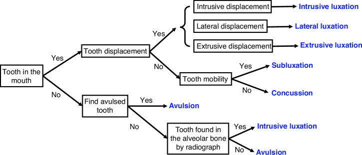
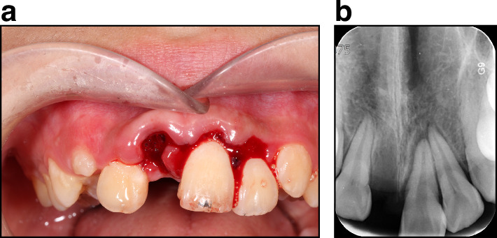
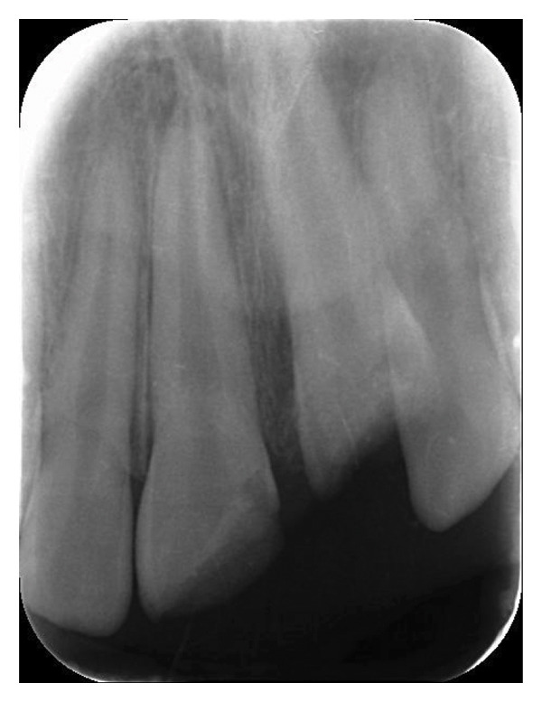
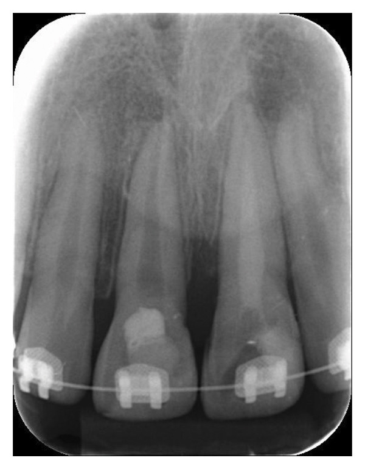
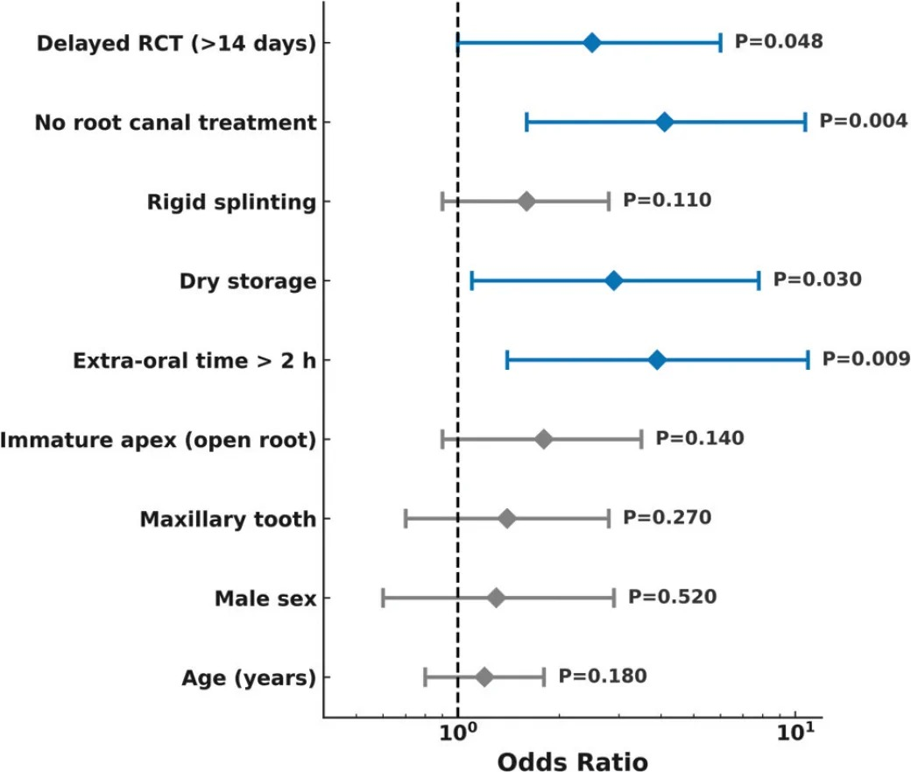

747 — Chấn thương răng và ổ răng ở trẻ: luxation – intrusion – avulsion, CBCT và ngưỡng nẹp / Traumatic dental injuries in children
Tags: pattern:di-lech-rang pattern:gay-chan-rang pattern:mat-lien-tuc-DCNC vung:rang-ham vung:ham-mat anatomy:rang-ham protocol:CBCT protocol:toan-hinh score:IADT
Mức chắc chắn (certainty): tổng hợp y văn (literature synthesis) — ghép sổ đăng ký 1.000 ca / 1.904 răng vĩnh viễn (J Clin Med 2026, PMC13706110, CC BY 4.0), đồng thuận chuyên gia 2024 về luxation – avulsion (Int J Oral Sci 2024, PMC11427573, CC BY 4.0), thuật toán gãy hàm + chấn thương răng (Front Oral Health 2026, PMC13478809, CC BY 4.0), 120 răng replant muộn, theo dõi ≥ 12 tháng (Acta Odontol Scand 2026, PMC13615479, CC BY 4.0), ca intrusion nặng có CBCT (Case Rep Pediatr 2026, PMC13329111, CC BY 4.0) và nghiên cứu CBCT về thời gian ngoài ổ răng – môi trường bảo quản (Int J Clin Pediatr Dent 2026, PMC13458372, CC BY-NC). Bài 9421 phủ liều CBCT nha khoa; bài này phủ chẩn đoán và xử trí chấn thương, không lặp phần liều.
1. Tổng quan bệnh học – cơ chế hình ảnh
- Bản chất: chấn thương răng là tổn thương dây chằng nha chu (periodontal ligament, PDL) và mạch máu chóp răng. Ba mức: dập PDL (concussion) → rách một phần, răng còn trong ổ nhưng di lệch (luxation) → đứt hoàn toàn, răng rời ổ (avulsion). Máu tụ trong khe PDL là nguyên nhân hình ảnh của dấu hiệu sớm nhất.
- TẠI SAO phim thấy "dày khe PDL": PDL bình thường là dải sáng ~0,2 mm giữa chân răng và xương ổ. Khi rách/dập, máu và dịch phù lấp khe → dải sáng rộng ra, có khi > 1 mm, kèm mất liên tục lá cứng (lamina dura). Trên phim 2D, hai dấu hiệu này chồng lên thân răng và xương ổ nên dễ bị bỏ.
- TẠI SAO có "quầng sáng quanh chóp" muộn: mạch máu chóp bị đứt → hoại tử tủy → viêm quanh chóp và tiêu chân răng viêm (inflammatory root resorption) — ổ tiêu dạng chén, bờ không đều, tiến triển nhanh. Thể tiêu thay thế (replacement resorption/ankylosis) xảy ra khi PDL chết hoàn toàn: xương dính trực tiếp vào ngà, mất khe PDL, răng cố định và chìm dần — đây là hậu quả của replant muộn, không phải nhiễm trùng.
- Số nằm lòng (dịch tễ): sổ đăng ký 1.000 ca (61,6% nam; tuổi trung vị 13, IQR 7–26), 1.904 răng vĩnh viễn + 528 răng sữa; 84,1% đến trong 24 giờ; ngã 67,8%, đạp xe 18,6%; răng cửa giữa hàm trên 54,9% (vĩnh viễn) và 58,7% (sữa); luxation 69,8% răng vĩnh viễn (sữa 92,8%), gãy răng 57% răng vĩnh viễn (sữa 14,2%); avulsion 202 răng (139 vĩnh viễn, 63 sữa); 40,9% ca avulsion răng vĩnh viễn có bảo quản khô; điều trị ban đầu: nẹp 36,5%, trám/phủ mặt gãy 27,0%, nắn 11,3% (PMC13706110).
- Số nằm lòng (tiên lượng replant muộn): 120 răng replant sau > 60 phút ngoài ổ, theo dõi ≥ 12 tháng: tiêu chân răng 60,0% (viêm 41,7%, thay thế 58,3%); sống sót 24 tháng 78,3%, giữ được chức năng 68,3%; yếu tố nguy cơ độc lập: ngoài ổ > 2 giờ, bảo quản khô, không điều trị tủy, điều trị tủy muộn > 14 ngày (PMC13615479).
- Ngưỡng thời gian PDL: khô < 60 phút** = PDL **còn trung bình** (một phần tế bào đã chết); khô **> 60 phút = PDL kém, phần lớn tế bào chết (PMC11427573).
- TẠI SAO chấn thương răng đi kèm gãy hàm: trong gãy xương hàm dưới đơn thuần, 43,5% bệnh nhân có tổn thương răng (trung bình ~4 răng/người); ở trẻ, 34,7% ca gãy hàm có chấn thương răng, ~10% mất ít nhất một răng (PMC13478809). → Đọc CT hàm mà không đọc răng là bỏ sót gần một nửa.
2. Mẫu hình + chẩn đoán phân biệt theo vị trí (gamut)
- Mẫu hình: trẻ ngã/đập mặt → răng cửa giữa hàm trên đau, lung lay, lệch trục, hoặc mất răng; phim quanh đỉnh/OPG thấy khe PDL rộng, răng lệch, đường gãy chân răng, hoặc ổ răng trống.
- Gamut theo hướng và mức di lệch (thứ tự nặng dần):
- Concussion — răng không di lệch, chỉ đau khi gõ; phim bình thường hoặc khe PDL hơi rộng.
- Subluxation — răng lung lay, không di lệch; phim khe PDL rộng.
- Extrusive luxation — răng dài ra, di lệch ra ngoài ổ; phim khe PDL rộng phía chóp.
- Lateral luxation — răng lệch sang bên, thường kèm gãy xương ổ; phim khe PDL rộng một bên, chồng hình.
- Intrusive luxation — răng ngắn lại, đẩy sâu vào xương ổ; phim khe PDL mất/ép, đường men nằm dưới mức răng bên cạnh.
- Avulsion — răng rời hẳn; phim ổ răng trống, kiểm tra răng có bị hít/sặc vào phổi hay không.
- Gãy chân răng — đường sáng ngang chân răng (cổ/thân/chóp), mảnh chóp di lệch.
- Gãy xương ổ răng — đường gãy qua xương ổ, nhiều răng di lệch cùng khối.
- Phân biệt "không phải chấn thương": chóp răng mở sinh lý (răng đang mọc) dễ bị đọc thành gãy chân răng; răng sữa chưa rụng chồng hình lên mầm răng vĩnh viễn; dị tật hình thể (răng thừa, odontoma) không có tiền sử chấn thương.
3. Bảng so sánh phân biệt (ma trận đối chiếu)
| Thực thể (entity) | Hình ảnh điển hình | Chốt vào (rule-in) | Chốt loại (rule-out) | Gợi ý xác nhận |
|---|---|---|---|---|
| Subluxation | Khe PDL rộng đều, răng không di lệch | Lung lay + khe PDL rộng, không lệch trục | Răng lệch hẳn khỏi ổ → extrusive/lateral | Phim quanh đỉnh 2 góc, so bên đối diện |
| Extrusive luxation | Răng dài ra, khe PDL rộng phía chóp | Răng nhô khỏi ổ theo trục, gõ đau | Răng ngắn lại → intrusive | Đo chiều cao thân răng so bên lành |
| Lateral luxation | Răng lệch bên, gãy xương ổ kèm theo | Lệch trục ngang + xương ổ gãy | Không gãy xương ổ, chỉ lung lay → subluxation | CBCT khi nghi gãy xương ổ |
| Intrusive luxation | Răng ngắn, mất khe PDL, men dưới mức răng bên | Răng tụt vào xương ổ, gõ âm sắc kim loại | Ổ răng trống → avulsion | CBCT đo độ sâu mm + xem chóp có bị đẩy vào xoang/mũi |
| Avulsion | Ổ răng trống, có thể gãy bờ ổ | Răng rời hẳn, bệnh nhân/người nhà mang răng tới | Răng còn trong ổ nhưng tụt sâu → intrusion | X-quang ngực/bụng nếu không tìm thấy răng |
| Gãy chân răng | Đường sáng ngang chân răng, mảnh chóp di lệch | Đường gãy thấy trên ≥ 2 phim hoặc CBCT | Đường sáng song song trục = ống tủy/kênh | CBCT — phim 2D bỏ sót gãy dọc/ngang mảnh nhỏ |
| Gãy xương ổ răng | Đường gãy qua xương ổ, nhiều răng di lệch cùng khối | Nhiều răng di chuyển cùng lúc, đau xương ổ | Chỉ một răng lung lay → chấn thương răng đơn thuần | CBCT, CT hàm |
4. Protocol chụp + hệ phân độ/điểm chuẩn hóa
- Bước 1 — phim 2D: quanh đỉnh (periapical) ≥ 2 góc khác nhau cho răng bị thương, ± toàn cảnh (OPG) khi có nhiều răng/gãy hàm. Phim 2D là bắt buộc, kể cả khi sẽ chụp CBCT — để so sánh và lưu hồ sơ.
- Bước 2 — CBCT khi nào: (a) nghi gãy chân răng mà 2D không thấy; (b) intrusion — cần đo độ sâu mm và xem chóp có xuyên vào xoang hàm/mũi; (c) nghi gãy xương ổ/hàm; (d) lập kế hoạch replant/cấy ghép. FOV nhỏ, đúng vùng — liều CBCT phụ thuộc FOV (bài 9421).
- Bước 3 — phân loại và xử trí theo IADT (đồng thuận 2024, PMC11427573):
- Subluxation: lung lay > độ 1 hoặc khó chịu → nẹp thụ động – mềm 2 tuần.
- Extrusive luxation: nắn + nẹp mềm 2 tuần.
- Lateral luxation: nắn dưới gây tê, nẹp 4 tuần (vì kèm gãy xương ổ).
- Avulsion: replant ngay tại chỗ nếu được; nếu không, giữ răng trong HBSS/sữa/nước muối và đến nha sĩ càng sớm càng tốt; khô < 60 phút** = PDL trung bình, **> 60 phút = PDL kém; nẹp mềm 2 tuần; kháng sinh toàn thân (amoxicillin/penicillin là lựa chọn đầu) và kiểm tra bạc cầu (tetanus); điều trị tủy theo độ trưởng thành chóp và thời gian khô.
- Intrusion — bảng ngưỡng dưới đây.
- Theo dõi (mốc thời gian): 2 tuần (tháo nẹp, đánh giá), 4 tuần, 6–8 tuần, 3 tháng, 6 tháng, 1 năm, sau đó hằng năm đến ≥ 5 năm với avulsion/intrusion/luxation nặng (PMC13478809, PMC11427573). Thử tủy có thể âm tính giả trong vài tuần đầu → không kết luận hoại tử chỉ dựa vào một lần thử.
flowchart TD
A[Răng cửa vĩnh viễn bị đẩy tụt vào xương ổ] --> B{Chóp răng đã đóng chưa}
B -->|Chưa đóng - răng non| C[Chờ tự mọc lại trong 4 tuần]
C -->|Không mọc| D[Kéo chỉnh nha sau 4 tuần]
B -->|Đã đóng| E{Độ sâu tụt}
E -->|3 mm trở xuống| F[Chờ tự mọc 8 tuần]
E -->|3 đến 7 mm| G[Chỉnh nha hoặc phẫu thuật nắn]
E -->|Trên 7 mm| H[Phẫu thuật đưa răng về vị trí]

Hình gốc: Int J Oral Sci 2024, PMC11427573, CC BY 4.0. Dùng nguyên bản, không chỉnh sửa.5. Biến thể bình thường và cạm bẫy
- "Mất răng" trên lâm sàng ≠ avulsion: răng có thể tụt hoàn toàn vào xương ổ (complete intrusion) — nhìn như mất răng nhưng phim thấy chân răng trong xương. Ngược lại, răng avulsion bị hít vào đường thở có thể là nguyên nhân ho/dai dẳng — phải chụp ngực khi không tìm thấy răng (PMC11427573, PMC13706110).
- Phim 2D bỏ sót gãy chân răng: đường gãy nằm trong mặt phẳng tia X hoặc mảnh gãy không di lệch → không thấy. Nếu lâm sàng nghi (đau khi gõ, lung lay từng mảnh) → CBCT, đừng kết luận "không gãy".
- Chóp răng mở sinh lý bị đọc thành gãy chân răng/tiêu chân răng — so răng đối diện cùng tuổi và phim cũ.
- Nẹp quá cứng/quá lâu: nẹp cứng (kim loại dày, nhiều răng) và kéo dài làm tăng dính chân răng/tiêu thay thế; nguyên tắc là nẹp thụ động, mềm, ngắn nhất có thể (PMC13615479: nẹp cứng không là yếu tố nguy cơ độc lập trong nghiên cứu này, nhưng không điều trị tủy và tủy muộn > 14 ngày thì có).
- Bỏ sót răng trong chấn thương hàm: 43,5% ca gãy hàm dưới có tổn thương răng (PMC13478809) — đọc CT hàm luôn phải cuộn xuống ổ răng, không dừng ở đường gãy xương.
- Răng sữa bị đẩy vào: nguy cơ tổn thương mầm răng vĩnh viễn — cần CBCT/OPG và theo dõi đến khi răng vĩnh viễn mọc; không đơn giản là "răng sữa sẽ tự rụng".
- Sai số "răng chết" quá sớm: thử tủy âm tính giả sau chấn thương; không điều trị tủy chỉ vì một lần thử âm — theo dõi 6–8 tuần và dựa vào hình ảnh tiêu chân răng.
6. Tự lượng giá — Blind Quiz
Ca 1 — Bé trai 9 tuổi ngã đạp xe, đau vùng răng cửa hàm trên. Ảnh (a) là lâm sàng, (b) là phim quanh đỉnh.

- Câu hỏi: Bốn răng cửa trong hình bị bốn kiểu chấn thương khác nhau. Kể tên từng kiểu và chỉ ra dấu hiệu trên phim cho mỗi kiểu. Răng nào cần xử trí khẩn cấp nhất?
Bấm để hiện đáp án (findings + chẩn đoán)
- Findings: theo chú thích gốc — răng 12 concussion, răng 22 subluxation, răng 21 extrusive luxation, răng 11 avulsion. Trên lâm sàng (a): 11 mất khỏi ổ, 21 nhô ra và lệch, niêm mạc rách; trên phim (b): khe PDL rộng ở các răng còn lại, 21 di lệch theo trục, ổ răng 11 trống.
- Chẩn đoán: chấn thương nhiều răng cùng lúc — điển hình của ngã đập mặt; avulsion (11) là tối cấp vì thời gian ngoài ổ quyết định PDL.
- Xử trí: replant 11 ngay (nếu răng còn, bảo quản ẩm), nắn 21, nẹp mềm, khám toàn bộ răng cửa và xương ổ.
- Nguồn: Int J Oral Sci 2024, PMC11427573, CC BY 4.0.
Ca 2 — Bé gái 8 tuổi ngã cầu thang, răng cửa giữa hàm trên ngắn hơn hẳn răng bên cạnh, không lung lay.

- Câu hỏi: Chẩn đoán? Vì sao răng không lung lay lại là dấu hiệu nặng, không phải nhẹ? Cần thêm phim gì và đo gì?
Bấm để hiện đáp án (findings + chẩn đoán)
- Findings: thân răng ngắn lại, đường men nằm dưới mức răng bên cạnh, khe PDL mất/ép, chóp răng bị đẩy sâu — hình intrusive luxation.
- Vì sao "không lung lay" = nặng: răng bị kẹt trong xương ổ, PDL bị dập nát toàn bộ và mạch máu chóp bị đứt → nguy cơ hoại tử tủy và tiêu chân răng/dính chân răng cao hơn răng chỉ lung lay.
- Cần: CBCT đo độ sâu tụt (mm), xem chóp có xuyên vào xoang hàm/mũi, và đánh giá xương ổ; sau đó chọn chờ tự mọc / chỉnh nha / phẫu thuật theo ngưỡng 3 mm – 7 mm.
- Nguồn: Case Rep Pediatr 2026, PMC13329111, CC BY 4.0.
Ca 3 — Cùng bệnh nhân, phim quanh đỉnh 9 tháng sau chấn thương: vùng chóp răng có quầng sáng bờ không đều.

- Câu hỏi: Quầng sáng này là gì? Hai thể tiêu chân răng cần phân biệt, và thể nào liên quan replant muộn?
Bấm để hiện đáp án (findings + chẩn đoán)
- Findings: quầng sáng quanh chóp bờ không đều — ổ tiêu xương do viêm (inflammatory root resorption) trên nền tủy hoại tử.
- Phân biệt: tiêu viêm (bờ chén, tiến triển nhanh, khe PDL còn) vs tiêu thay thế/dính chân răng (mất khe PDL, xương dính ngà, răng chìm dần và cố định).
- Liên quan replant muộn: nghiên cứu 120 răng replant sau > 60 phút cho thấy 60% tiêu chân răng (viêm 41,7%, thay thế 58,3%); khô > 2 giờ, bảo quản khô, không điều trị tủy, tủy muộn > 14 ngày làm tăng nguy cơ (PMC13615479).
- Nguồn: Case Rep Pediatr 2026, PMC13329111 và Acta Odontol Scand 2026, PMC13615479, CC BY 4.0.
Ca 4 — Đọc nhanh bằng đồ thị: yếu tố nào thực sự độc lập với tiêu chân răng sau replant muộn?

- Câu hỏi: Ba yếu tố nào có ý nghĩa thống kê (xanh)? Yếu tố nào không đạt ý nghĩa dù nghe "hợp lý" (xám)?
Bấm để hiện đáp án (findings + chẩn đoán)
- Có ý nghĩa: điều trị tủy muộn > 14 ngày (p = 0,048), không điều trị tủy (p = 0,004), bảo quản khô (p = 0,030), ngoài ổ > 2 giờ (p = 0,009).
- Không đạt ý nghĩa: nẹp cứng (p = 0,110), chóp mở (p = 0,140), răng hàm trên (p = 0,270), nam (p = 0,520), tuổi (p = 0,180).
- Đọc đúng: "không đạt ý nghĩa" không có nghĩa là vô hại — nghiên cứu hồi cứu, một trung tâm, cỡ mẫu 120 nên thiếu lực với các yếu tố nhỏ; chỉ nên dùng để ưu tiên can thiệp sớm (tủy, bảo quản ẩm, thời gian ngoài ổ).
- Nguồn: Acta Odontol Scand 2026, PMC13615479, CC BY 4.0.
Bài liên quan chéo
- 1708 – Gãy lồi cầu xương hàm dưới ở trẻ (chấn thương hàm cùng cơ chế ngã đập cằm)
- 1707 – Trật khớp thái dương–hàm ở trẻ
- 1703 – Dính khớp thái dương–hàm bẩm sinh
- 9421 – CBCT nón trong nha khoa & chỉnh nha ở trẻ (liều, FOV, DRL)
- 320 – Gãy xương & trật khớp cấp cứu (bờm mỡ, mỡ–máu)
Không dùng để chẩn đoán độc lập khi chưa có người hướng dẫn.